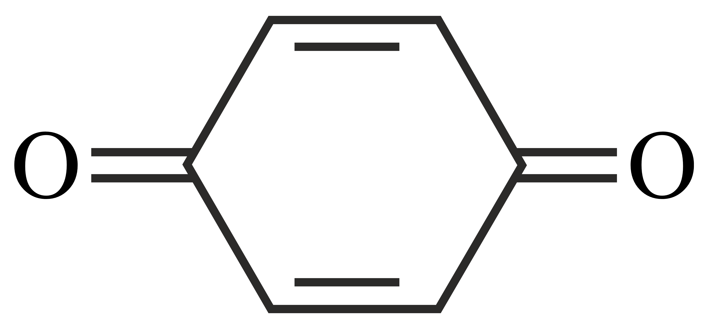
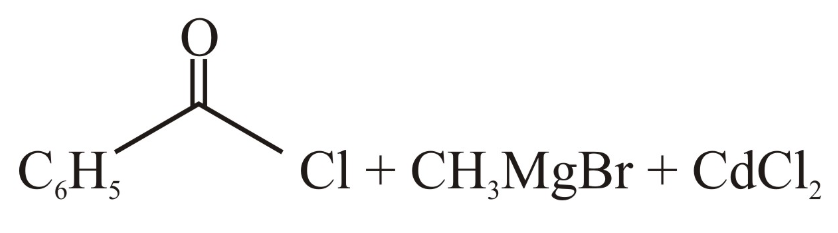
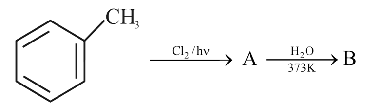
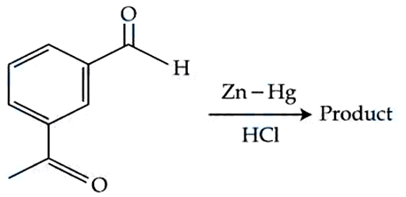
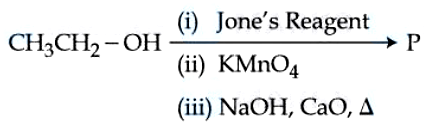
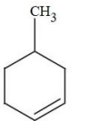
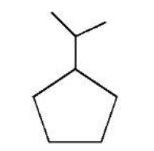
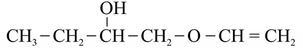

Filter questions
📌 CHEM-ALDEKETO-NUCLEOPHILIC_ADDITION_CARBONYL
↗ Cluster set
Q1
CHEM-2021-0101-S2-Q046
2021 | 01 Sep | Shift 2
—
MCQ
Given below are two statements: Statement: The nucleophilic addition of sodium hydrogen sulphite to an aldehyde or a ketone involves I proton transfer to form a stable ion. Statement II: The nucleophilic addition of hydrogen cyanide to an aldehyde or a ketone yields amine as final product. In the light of the above statements, choose the most appropriate answer from the options given below:
Answer: D
Q2
CHEM-2021-0101-S2-Q048
2021 | 16 Mar | Shift 2
—
MCQ
Which of the following polymer is used in the manufacture of wood laminates?
Answer: C
Q3
CHEM-2021-0101-S1-Q037
2021 | 17 Mar | Shift 1
—
MCQ
Mesityl oxide is a common name of:
Answer: D
Q4
CHEM-2021-0101-S2-Q060
2021 | 18 Mar | Shift 2
—
Integer
In Tollen's test for aldehyde, the overall number of electron(s) transferred to the Tollen's reagent formula [Ag (NH3)2]+ per aldehyde group to form silver mirror is ___.(Round off to the Nearest integer)

Answer: 2
Q5
CHEM-2021-0101-S2-Q049
2021 | 20 Jul | Shift 2
—
MCQ
Bakelite is a cross-linked polymer of formaldehyde and:
Answer: C
Q6
CHEM-2021-0101-S1-Q044
2021 | 25 Feb | Shift 1
—
MCQ
Given below are two statements: Statement I: CeO2 can be used for oxidation of aldehydes and ketones. Statement II: Aqueous solution of EuSO4 is a strong reducing agent. In the light of the above statements, choose the correct answer from the options given below:
Answer: A
Q7
CHEM-2021-0101-S1-Q047
2021 | 25 Feb | Shift 1
—
MCQ
Which one of the following reactions will not form acetaldehyde?
Answer: A
Q8
CHEM-2021-0101-S1-Q050
2021 | 26 Aug | Shift 1
—
MCQ
The polymer formed on heating Novolac with formaldehyde is:
Answer: B
Q9
CHEM-2021-0101-S2-Q039
2021 | 26 Aug | Shift 2
—
MCQ
Given below are two statements: one is labelled as Assertion
Answer: C
Q10
CHEM-2021-0101-S2-Q044
2021 | 26 Feb | Shift 2
—
MCQ
2, 4 −DNP test can be used to identify:
Answer: A
Q11
CHEM-2022-0101-S1-Q037
2022 | 24 Jun | Shift 1
—
MCQ
Which of the following is an example of conjugated diketone?

Answer: C
Q12
CHEM-2022-0101-S2-Q046
2022 | 24 Jun | Shift 2
—
MCQ
Hex−4 -ene−2 -ol on treatment with PCC gives ' A '. ' A ' on reaction with sodium hypoiodite gives ' B ', which on further heating with soda lime gives ' C '. The compound ' C ' is
Answer: C
Q13
CHEM-2022-0101-S2-Q048
2022 | 25 Jun | Shift 2
—
MCQ
Which of the following ketone will NOT give enamine on treatment with secondary amines? [where t - Bu is -CCH33]

Answer: B
Q14
CHEM-2022-0101-S2-Q043
2022 | 26 Jun | Shift 2
—
MCQ
Toluene can be easily converted into benzaldehyde by which of the following reagents?
Answer: B
Q15
CHEM-2022-0101-S2-Q045
2022 | 26 Jun | Shift 2
—
MCQ
The reagent, from the following, which converts benzoic acid to benzaldehyde in one step is
Answer: C
Q16
CHEM-2022-0101-S1-Q038
2022 | 27 Jun | Shift 1
—
MCQ
Given below are two Statements: Statement I: Classical smog occurs in cool humid climate. It is a reducing mixture of smoke, fog and sulphur dioxide. Statement II: Photochemical smog has components, ozone, nitric oxide, acrolein, formaldehyde, PAN etc. In the light of the above statements, choose the most appropriate answer from the options given below.
Answer: A
Q17
CHEM-2022-0101-S1-Q045
2022 | 27 Jun | Shift 1
—
MCQ
Which of the following reactions will yield benzaldehyde as a product?
Answer: C
Q18
CHEM-2022-0101-S1-Q046
2022 | 27 Jun | Shift 1
—
MCQ
' A ' and ' B ' respectively are
Answer: C
Q19
CHEM-2022-0101-S1-Q039
2022 | 29 Jun | Shift 1
—
MCQ
Two isomers ' A ' and ' B ' with molecular formula C4H8 give different products on oxidation with KMnO4 in acidic medium. Isomer ' A ' on reaction with KMnO4 /H+ results in effervescence of a gas and gives ketone. The compound ' ' is A
Answer: D
Q20
CHEM-2023-0101-S2-Q057
2023 | 08 Apr | Shift 2
—
Integer
A compound when treated with phthalic anhydride in presence of concentrated yields. is ′X′ H2 SO4 ′Y′ ′Y′ used as an acid/base indicator. ′X′ and ′Y′ are respectively (1) Anisole, methyl orange (2) Salicylaldehyde, Phenolphthalein (3) Toludine, Phenolphthalein (4) Carbolic acid, Phenolphthalein
Answer: 556
Q21
CHEM-2023-0101-S1-Q049
2023 | 10 Apr | Shift 1
—
MCQ
Match List-I with List-II. List-I Polymer List-II Type/Class A. Nylon−2-Nylon−6 I. Thermosetting polymer B. Buna-N II. Biodegradable polymer C. Ureaformaldehyde resin III. Synthetic rubber D. Dacron IV. Polyester Choose the correct answer from the options given below:
Structured List-I / List-II view
| Label | List-I | List-II | Match |
|---|---|---|---|
| A | Nylon−2-Nylon−6 | Thermosetting polymer | I |
| B | Buna-N | Biodegradable polymer | II |
| C | Ureaformaldehyde resin | Synthetic rubber | III |
| D | Dacron | Polyester | IV |
Answer: B
Q22
CHEM-2023-0101-S1-Q045
2023 | 12 Apr | Shift 1
—
MCQ
2 −hexene (i) O3 Products − → (ii) H2O The two products formed in above reaction are
Answer: B
Q23
CHEM-2023-0101-S1-Q057
2023 | 12 Apr | Shift 1
—
Integer
The mass of NH3 produced when 131.8 kg of cyclohexane carbaldehyde undergoes Tollen’s test is _____ kg. (Nearest Integer) Molar mass of C = 12 g/ mol N = 14 g/ mol O = 16 g/ mol
Answer: 3
Q24
CHEM-2023-0101-S1-Q057
2023 | 13 Apr | Shift 1
—
Integer
For the given reaction The, total number of possible products formed by tertiary carbocation of A is _______. − Q58. D −(+)− Glyceraldehyde i) HCN → ii)H2O/H+ iii) HNO3 The products formed in the above reaction are (1) One optically active and one meso product (2) Two optically inactive products (3) Two optically active products (4) One optically inactive and one meso product

Answer: 240
Q25
CHEM-2023-0101-S2-Q043
2023 | 24 Jan | Shift 2
—
MCQ
Given below are two statements: Statement I: under Clemmensen reduction conditions will give Statement II: under Wolff-Kishner reduction condition will give In the light of the above statements, choose the correct answer from the options given below:
Answer: D
Q26
CHEM-2023-0101-S2-Q058
2023 | 29 Jan | Shift 2
—
Integer
Match List-I and List-II. List-I List-II A. Elastomeric polymer I. Urea formaldehyde resin B. Fibre polymer II. Polystyrene C. Thermosetting polymer III. Polyester D. Thermoplastic polymer IV. Neoprene Choose the correct answer from the options given below: (1) A-II, B-III, C-I, D-IV (2) A-II, B-I, C-IV, D-III (3) A-IV, B-III, C-I, D-II (4) A-IV, B-I, C-III, D-II
Structured List-I / List-II view
| Label | List-I | List-II | Match |
|---|---|---|---|
| A | Elastomeric polymer | Urea formaldehyde resin | I |
| B | Fibre polymer | Polystyrene | II |
| C | Thermosetting polymer | Polyester | III |
| D | Thermoplastic polymer | Neoprene | IV |

Answer: 2
Q27
CHEM-2023-0101-S1-Q045
2023 | 30 Jan | Shift 1
—
MCQ
Which of the following compounds would give the following set of qualitative analysis? (i) Fehling’s Test: Positive (ii) Na fusion extract upon treatment with sodium nitroprusside gives a blood red colour but not prussian blue.

Answer: D
Q28
CHEM-2023-0101-S2-Q044
2023 | 31 Jan | Shift 2
—
MCQ
A hydrocarbon 'X' with formula C6H8 uses two moles of H2 on catalystic hydrogenation of its one mole. On ozonolysis, 'X' yields two moles of methane dicarbaldehyde. The hydrocarbon 'X' is:
Answer: C
Q29
CHEM-2024-0101-S2-Q050
2024 | 01 Feb | Shift 2
—
MCQ
Match List - I with List - II. List-I (Reactants) List-II Products
Answer: C
Q30
CHEM-2024-0101-S1-Q047
2024 | 04 Apr | Shift 1
—
MCQ
Given below are two statements: Statements I: Acidity of α -hydrogens of aldehydes and ketones is responsible for Aldol reaction. Statement II: Reaction between benzaldehyde and ethanal will NOT give Cross - Aldol product. In the light of the above statements, choose the most appropriate answer from the options given below:
Answer: A
Q31
CHEM-2024-0101-S2-Q058
2024 | 05 Apr | Shift 2
—
Integer
In the Claisen-Schmidt reaction to prepare 351 g of dibenzalacetone using 87 g of acetone, the amount of benzaldehyde required is ______ g. (Nearest integer)
Answer: 318
Q32
CHEM-2024-0101-S1-Q047
2024 | 06 Apr | Shift 1
—
MCQ
In Reimer - Tiemann reaction, phenol is converted into salicylaldehyde through an intermediate. The structure of intermediate is _____

Answer: A
Q33
CHEM-2024-0101-S1-Q048
2024 | 06 Apr | Shift 1
—
MCQ
Which among the following aldehydes is most reactive towards nucleophilic addition reactions?

Answer: D
Q34
CHEM-2024-0101-S2-Q059
2024 | 08 Apr | Shift 2
—
Integer
Two moles of benzaldehyde and one mole of acetone under alkaline conditions using aqueous NaOH after heating gives x as the major product. The number of π bonds in the product x is _______

Answer: 9
Q35
CHEM-2024-0101-S2-Q048
2024 | 09 Apr | Shift 2
—
MCQ
Which of the following compounds will give silver mirror with ammoniacal silver nitrate? A. Formic acid B. Formaldehyde C. Benzaldehyde D. Acetone Choose the correct answer from the options given below:
Answer: A
Q36
CHEM-2024-0101-S2-Q050
2024 | 09 Apr | Shift 2
—
MCQ
The incorrect statement about Glucose is:
Answer: A
Q37
CHEM-2024-0101-S1-Q060
2024 | 29 Jan | Shift 1
—
Integer
From the compounds given below, number of compounds which give positive Fehling's test is Benzaldehyde, Acetaldehyde, Acetone, Acetophenone,Methanal, 4-nitrobenzaldehyde, cyclohexane carbaldehyde. β(1 i),

Answer: 3
Q38
CHEM-2024-0101-S2-Q044
2024 | 29 Jan | Shift 2
—
MCQ
Phenol treated with chloroform in presence of sodium hydroxide, which further hydrolysed in presence of an acid results
Answer: D
Q39
CHEM-2024-0101-S1-Q050
2024 | 30 Jan | Shift 1
—
MCQ
Sugar which does not give reddish brown precipitate with Fehling's reagent is:
Answer: A
Q40
CHEM-2024-0101-S2-Q048
2024 | 30 Jan | Shift 2
—
MCQ
Salicylaldehyde is synthesized from phenol, when reacted with
Answer: D
Q41
CHEM-2024-0101-S2-Q049
2024 | 30 Jan | Shift 2
—
MCQ
m-chlorobenzaldehyde on treatment with 50%KOH solution yields

Answer: D
Q42
CHEM-2025-0101-S1-Q057
2025 | 22 Jan | Shift 1
—
Integer
The compounds which give positive Fehling's test are: (A) (B) (C) HOCH2 −CO −(CHOH)3 −CH2 −OH (D) (E) Choose the correct answer from the options given below: (1) (A), (D) and (E) Only (2) (C), (D) and (E) Only (3) (A), (C) and (D) Only (4) (A), (B) and (C) Only
Answer: 2
Q43
CHEM-2025-0101-S1-Q055
2025 | 24 Jan | Shift 1
—
Integer
Which of the following arrangements with respect to their reactivity in nucleophilic addition reaction is correct? (1) acetophenone < benzaldehyde < p-tolualdehyde (2) benzaldehyde < acetophenone < p- < p- nitrobenzaldehyde nitrobenzaldehyde < p-tolualdehyde (3) p- nitrobenzaldehyde < benzaldehyde < p- (4) acetophenone < p-tolualdehyde < benzaldehyde tolualdehyde < acetophenone < p- nitrobenzaldehyde

Answer: 4
Q44
CHEM-2025-0101-S1-Q052
2025 | 28 Jan | Shift 1
—
Integer
Both acetaldehyde and acetone (individually) undergo which of the following reactions? A. Iodoform Reaction B. Cannizaro Reaction C. Aldol Condensation D. Tollen's Test E. Clemmensen Reduction Choose the correct answer from the options given below: (1) A, B and D Only (2) C and E Only (3) A, C and E Only (4) B, C and D Only

Answer: 3
📌 CHEM-ALDEKETO-CARBOXYLIC_ACID_DERIVATIVES
↗ Cluster set
Q45
CHEM-2021-0101-S2-Q047
2021 | 01 Sep | Shift 2
—
MCQ
In the following sequence of reactions a compound A, (molecular formula C6H12O2 ) with a straight chain structure gives a C4 carboxylic acid. A is: Oxidation ALiAlH4 B ⟶ C4 - carboxylic acid H3O+

Answer: C
Q46
CHEM-2021-0101-S1-Q037
2021 | 20 Jul | Shift 1
—
MCQ
For above chemical reactions, identify the correct statement from the following:
Answer: D
Q47
CHEM-2021-0101-S2-Q046
2021 | 31 Aug | Shift 2
—
MCQ
For the reaction given below: The compound which is not formed as a product in the reaction is a:
Answer: D
Q48
CHEM-2022-0101-S1-Q046
2022 | 24 Jun | Shift 1
—
MCQ
Two statements are given belwo: Statement I: The melting point of monocarboxylic acid with even number of carbon atoms is higher than that of with odd number of carbon atoms acid immediately below and above it in the series. Statement II: The solubility of monocarboxylic acids in water decreases with increase in molar mass. Choose the most appropriate option:
Answer: D
Q49
CHEM-2022-0101-S1-Q046
2022 | 29 Jun | Shift 1
—
MCQ
Given below are two statements: Statement I: The esterification of carboxylic acid with an alcohol is a nucleophilic acyl substitution. Statement II: Electron withdrawing groups in the carboxylic acid will increase the rate of esterification reaction. Choose the most appropriate option
Answer: C
Q50
CHEM-2023-0101-S2-Q044
2023 | 08 Apr | Shift 2
—
MCQ
The descending order of acidity for the following carboxylic acid is-
Answer: C
Q51
CHEM-2024-0101-S1-Q050
2024 | 08 Apr | Shift 1
—
MCQ
The incorrect statement regarding the given structure is
Answer: A
Q52
CHEM-2024-0101-S2-Q032
2024 | 27 Jan | Shift 2
—
MCQ
The molecular formula of second homologue in the homologous series of mono carboxylic acids is _________.
Answer: B
📌 CHEM-ALDEKETO-ALDOL_CANNIZZARO_TESTS
Q53
CHEM-2023-0101-S1-Q057
2023 | 29 Jan | Shift 1
—
Integer
Match List I with List II. List I List II Reaction Reagents Hoffmann (A) Degradation (I) Conc. KOH, Δ Clemmensen (B) (II) CHCl3, NaOH /H3O+ reduction (C) Cannizzaro reaction (III) Br2, NaOH Reimer-Tiemann (D) (IV) Zn −Hg / HCl reaction (1) (A) - III, (B) - IV, (C) - II, (D) - I (2) (A) - II, (B) - IV, (C) - I, (D) - III (3) (A) - III, (B) - IV, (C) - I, (D) - II (4) (A) - II, (B) - I, (C) - III, (D) - IV
Answer: 13